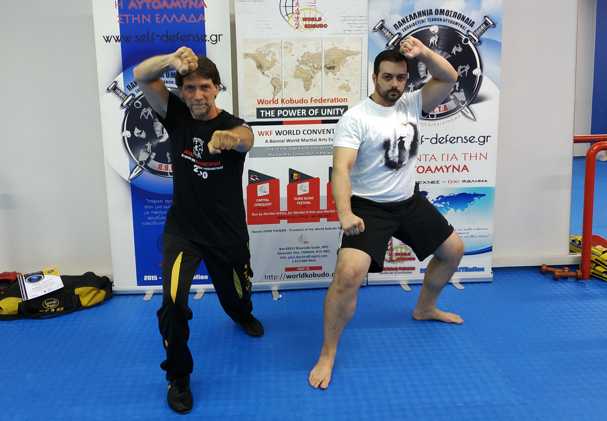

Οδηγός αρχαρίων στις πολεμικές τέχνες
Κάθε χρόνο χιλιάδες άνθρωποι αποφασίζουν να ξεκινήσουν πολεμικές τέχνες. Οι περισσότεροι όμως δεν γνωρίζουν ποια τέχνη τους ταιριάζει, πώς να επιλέξουν σχολή ή τι πρέπει να προσέξουν πριν εγγραφούν. Το αποτέλεσμα είναι συχνά να χάσουν χρόνο, χρήματα και ενθουσιασμό.
Ο οδηγός αυτός δημιουργήθηκε για να βοηθήσει έναν αρχάριο να αποφύγει τα συνηθέστερα λάθη.
1. Αποφάσισε γιατί θες να κάνεις πολεμικές τέχνες
Υπάρχουν εκείνες που έχουν πιο αθλητική μορφή (Tae Kwon Do, αγωνιστικό Karate, Sanda, Judo), άλλες που είναι πιο ξεκούραστες (BJJ, Aikido, Jeet Kune Do) και λιγότερο δυναμικές (Karate-do, Kung Fu, Chap Koon Do, FMA), άλλες που δίνουν έμφαση στην πνευματική καλλιέργεια και άλλες που ωφελούν ολιστικά (παραδοσιακό Karate-do, παραδοσιακό Tae Kwon Do, παραδοσιακό Judo).
Οι περισσότεροι άνθρωποι θέλουν να μάθουν να αμύνονται. Εδώ τα πράγματα είναι πολύπλοκα, διότι ο αθλητικός νόμος στην Ελλάδα δεν επιτρέπει τη διδασκαλία πολεμικών τεχνών που δεν είναι αθλήματα.
Άλλοι άνθρωποι θέλουν να γνωρίσουν έναν διαφορετικό πολιτισμό. Σε αυτούς ταιριάζουν περισσότερο οι παραδοσιακές πολεμικές τέχνες, σχολές που δίνουν έμφαση στην ιστορία και τη φιλοσοφία ή τέχνες που περιλαμβάνουν εκπαίδευση στα όπλα.
Τέλος, υπάρχουν εκείνοι που αναζητούν κυρίως άσκηση και παρέα. Σε αυτή την περίπτωση, ένα μαχητικό άθλημα (Muay Thai, Pahuyuth, Kick Boxing, BJJ) πιθανότατα θα τους ταιριάξει περισσότερο.
2. Τι είδους πολεμική τέχνη θέλεις να μάθεις;
Υπάρχουν τέχνες που δίνουν έμφαση στα χτυπήματα και άλλες που δίνουν έμφαση στην πάλη.
Αν κάποιος θέλει να γραπώνει τον αντίπαλο, θα αναζητήσει τέχνες που περιέχουν αρπαγές (Eagle Claw, Chin Na), κλειδώματα και ρίψεις (Sumo, Judo, Sambo, Jujutsu).
Άλλος θέλει να χτυπά με τα χέρια, άλλος με τα πόδια, άλλος να κινείται στις μπάλες των ποδιών, ενώ άλλος προτιμά την πάλη στο έδαφος.
Υπάρχουν επίσης όσοι επιθυμούν να ασκηθούν στα όπλα (Kendo, Iaido, Kobudo, FMA). Το τι αρέσει στον καθένα σχετίζεται σε μεγάλο βαθμό με τον χαρακτήρα και την προσωπικότητά του.
3. Μάχομαι και αμύνομαι
Είναι δύο διαφορετικά πράγματα που συνδέονται άρρηκτα.
Το να μάθει κάποιος να μάχεται μέσα από ένα μαχητικό άθλημα ή μια πολεμική τέχνη σημαίνει ότι δοκιμάζει τις τεχνικές του σε συνθήκες πίεσης (kumite, sparring, nage-ai, randori).
Η αυτοάμυνα, αντίθετα, περιλαμβάνει θεωρητική εκπαίδευση (πρόληψη, διαχείριση περιστατικών) και πρακτική εξάσκηση σε ρεαλιστικά σενάρια βίας.
- Πιάσιμο λαιμού
- Πιάσιμο χεριού
- Κυκλική γροθιά
- Μπροστινό λάκτισμα
- Αγκάλιασμα
- Ακινητοποίηση στο έδαφος
- Τράβηγμα από το ρούχο
- Σπρώξιμο
4. Βρες σχολές και επισκέψου τες
Αφού αποφασίσεις ποια κατηγορία πολεμικής τέχνης σε ενδιαφέρει, ενημερώσου για την ιστορία της και επισκέψου διαφορετικούς συλλόγους.
Παρακολούθησε προπονήσεις προχωρημένων μαθητών, παρατήρησε τον δάσκαλο, τους μαθητές, τον εξοπλισμό, την τεχνική και τη γενικότερη συμπεριφορά μέσα στη σχολή.
Το δύσκολο είναι ότι ένας αρχάριος δεν μπορεί να γνωρίζει αν αυτά που διαφημίζει μια σχολή ανταποκρίνονται στην πραγματικότητα. Ένας φίλος με εμπειρία στις πολεμικές τέχνες μπορεί να εντοπίσει πολύ γρήγορα πιθανές αδυναμίες.
Έχω επισκεφθεί αρκετές σχολές και σεμινάρια διαφορετικών πολεμικών τεχνών. Πολλές φορές διαπίστωσα ότι το πραγματικό επίπεδο εκπαίδευσης απείχε σημαντικά από αυτό που διαφημιζόταν. Συνάντησα προχωρημένους μαθητές που δεν γνώριζαν βασικές τεχνικές και περιπτώσεις όπου η «προχωρημένη ύλη» αντιστοιχούσε ουσιαστικά σε επίπεδο αρχαρίων. Για αυτόν τον λόγο δεν πρέπει ποτέ να βασίζεσαι μόνο στη διαφήμιση μιας σχολής.
5. Εξέταση σχολής
Αφού καταλήξεις σε μια σχολή, έλεγξε αν διαθέτει αδειοδοτημένο προπονητή και αν είναι αναγνωρισμένη από τη Γενική Γραμματεία Αθλητισμού.
Αυτό είναι ιδιαίτερα σημαντικό αν σκοπεύεις να συμμετέχεις σε αγώνες ή θέλεις να γνωρίζεις ότι ο σύλλογος λειτουργεί νόμιμα.
Ωστόσο, τα νόμιμα έγγραφα δεν αποτελούν απόδειξη τεχνικής κατάρτισης ούτε εγγυώνται την ποιότητα της διδασκαλίας.
Ερεύνησε επίσης τη γενεαλογία του δασκάλου και της πολεμικής τέχνης που διδάσκει. Σε ορισμένες περιπτώσεις, ιδιαίτερα στην Ελλάδα, υπάρχουν σχολές χωρίς σαφή γενεαλογία ή επίσημη εκπαιδευτική συνέχεια.
6. Κόστος
Αν το κόστος αποτελεί σημαντικό παράγοντα για εσένα, καλό είναι να γνωρίζεις από την αρχή ότι ορισμένες πολεμικές τέχνες έχουν αρκετά υψηλό συνολικό κόστος λόγω εξοπλισμού ή αγωνιστικών υποχρεώσεων.
Το αγωνιστικό Tae Kwon Do απαιτεί πλήρη προστατευτικό εξοπλισμό, ενώ οι συμμετοχές στους αγώνες μπορεί να κοστίζουν περίπου 80€ ανά αγωνιστική κατηγορία. Αντίστοιχα, το Kendo είναι μία από τις ακριβότερες πολεμικές τέχνες όσον αφορά τον εξοπλισμό.
Πιο οικονομικές επιλογές είναι το Sumo, το Judo και η Πάλη, όπου το βασικό κόστος περιορίζεται κυρίως στην ενδυμασία.
Στο παραδοσιακό Karate απαιτείται ουσιαστικά μόνο η στολή, ενώ στο αγωνιστικό Karate χρειάζεται επιπλέον προστατευτικός εξοπλισμός, αν και συνήθως οικονομικότερος από εκείνον του αγωνιστικού Tae Kwon Do.
7. Αμφισβήτησε
Όσο περνούν οι μήνες και τα χρόνια της προπόνησης, είναι φυσιολογικό να δημιουργούνται απορίες. Όσο αυξάνονται οι γνώσεις σου, τόσο περισσότερο θα προβληματίζεσαι για την τεχνική, τη λειτουργία της σχολής και την οργάνωσή της.
Μερικές χρήσιμες ερωτήσεις είναι:
- Τα διπλώματα εκδίδονται από την ομοσπονδία ή από τον σύλλογο;
- Ο σύλλογος συμμετέχει σε επίσημους αγώνες;
- Έχει δικαίωμα ψήφου στην ομοσπονδία;
- Πόσα σεμινάρια οργανώνονται κάθε χρόνο;
- Οι μαθητές προάγονται πραγματικά με την αξία τους;
Ένας σωστός δάσκαλος δεν φοβάται τις ερωτήσεις. Αντίθετα, ενθαρρύνει τον μαθητή να σκέφτεται, να ερευνά και να κατανοεί σε βάθος αυτό που μαθαίνει.
8. Δεύτερη πολεμική τέχνη
Είναι φυσιολογικό όταν κάποιος φτάσει στο 1ο Dan σε μια πολεμική τέχνη να ξεκινήσει παράλληλα και μια δεύτερη με τελείως διαφορετικά χαρακτηριστικά.
Η πρακτική αυτή διευρύνει τις γνώσεις, συμπληρώνει αδυναμίες και οδηγεί σε έναν πιο ολοκληρωμένο μαχητή.
9. Η μαύρη ζώνη
Στις περισσότερες πολεμικές τέχνες η μαύρη ζώνη αποτελεί ένδειξη πολυετούς προπόνησης και καλής γνώσης της ύλης. Δεν σημαίνει όμως ότι ο μαθητής ολοκλήρωσε την εκπαίδευσή του. Αντίθετα, στις περισσότερες περιπτώσεις σηματοδοτεί την αρχή μιας πολύ βαθύτερης πορείας.
Σε ορισμένες πολεμικές τέχνες, όπως το Sumo, το Judo και το BJJ, η μαύρη ζώνη υποδηλώνει ότι έχει ολοκληρωθεί σε μεγάλο βαθμό ο βασικός κορμός της ύλης. Από εκεί και πέρα αρχίζει η πραγματική εμβάθυνση, η βελτίωση των λεπτομερειών και η προσωπική εξέλιξη του ασκούμενου.
10. Ο δάσκαλος
Το ζήτημα του δασκάλου το άφησα τελευταίο, γιατί κατά τη γνώμη μου είναι το σημαντικότερο. Στα ιαπωνικά ο όρος Sensei χρησιμοποιείται ως προσφώνηση προς κάποιον που μας διδάσκει κάτι για τη ζωή.
Στον χώρο των πολεμικών τεχνών ο δάσκαλος αποτελεί πολλές φορές έναν δεύτερο πατέρα. Προσωπικά, οι δάσκαλοί μου με επηρέασαν περισσότερο από οποιονδήποτε άλλον άνθρωπο.
Αν έχετε έναν πραγματικά σπουδαίο δάσκαλο, μη δίνετε υπερβολική σημασία στο αν σας ταιριάζει απόλυτα η πολεμική τέχνη.
Αν, για παράδειγμα, δεν σας αρέσει ιδιαίτερα το Judo αλλά έχετε έναν εξαιρετικό δάσκαλο, είναι πολύ πιθανό ότι αργά ή γρήγορα θα επιστρέψετε κοντά του.
Ένας πραγματικά σπουδαίος δάσκαλος αξίζει περισσότερο από την ίδια την πολεμική τέχνη.
Κάποιοι θεωρούν μειονέκτημα ότι ένας δάσκαλος γνωρίζει μόνο μία πολεμική τέχνη. Προσωπικά διαφωνώ.
Δεν θα άλλαζα ποτέ τον δάσκαλό μου τον Θανάση, που γνωρίζει μόνο Judo, ούτε τον δάσκαλό μου τον Γιώργο, που γνωρίζει μόνο Tae Kwon Do. Οι άνθρωποι αυτοί έχουν μάθει να σκέφτονται σαν Judoka και σαν Taekwondoin αντίστοιχα. Αυτό ακριβώς ήθελα να μάθω από εκείνους.
Αντίθετα, αν κάποιος έρθει σε εμένα να μάθει Sumo, είναι σχεδόν βέβαιο ότι μέσα στο μάθημα θα χρησιμοποιήσω στοιχεία και από Judo και από Πάλη. Αυτό είναι αναπόφευκτο.
11. Ο μαθητής
Οι περισσότεροι αρχάριοι απογοητεύονται επειδή περιμένουν γρήγορα αποτελέσματα. Οι πολεμικές τέχνες όμως δεν λειτουργούν έτσι.
Πριν από πενήντα χρόνια, μπορούσε να περάσουν ακόμη και τρία χρόνια εξάσκησης σε ένα μόνο kata πριν ο μαθητής διδαχθεί το επόμενο. Σήμερα πολλές σχολές ολοκληρώνουν την ίδια διαδικασία μέσα σε λίγους μήνες. Παρ' όλα αυτά, ο σύγχρονος άνθρωπος εξακολουθεί να αισθάνεται ανικανοποίητος.
Η σωστή τεχνική, η φυσική κατάσταση και η κατανόηση των αρχών μιας πολεμικής τέχνης απαιτούν χρόνια συστηματικής εξάσκησης.
Καλό ταξίδι!
